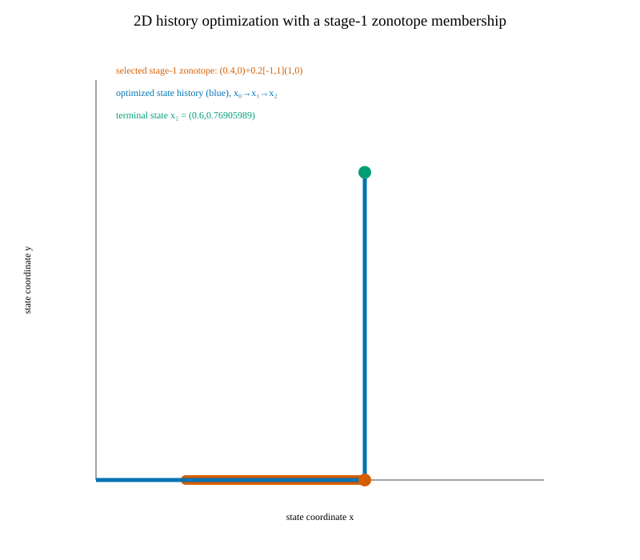

Whole-history optimization · typed zonotope membership
Constrain an intermediate state to a zonotope
The two-state, two-step integrator is x₀=(0,0), x₁=x₀+(u₀,0), x₂=x₁+(0,u₁), with 0≤u₀,u₁≤1. The full H relation remains in the optimization. At stage 1, the selected state must also satisfy the typed membership x₁ = c + Gλ, where the column vectors are:
c = [0.4; 0], G = [0.2; 0], −1 ≤ λ ≤ 1.

The authored source objective is J=‖x₂−(1,1)‖₂+0.5(|u₀|+|u₁|). The selected region forces u₀∈[0.2,0.6]. Writing a=1−u₀ and b=1−u₁ gives J=1+√(a²+b²)−(a+b)/2; its minimum on this domain is a=0.4, b=a/√3.
Native result and independent checks
| Quantity | Solver result | Analytic reference |
|---|---|---|
| u₀ | 0.6 | 0.6 |
| u₁ | 0.7690598923 | 0.7690598923 |
| J | 1.146410162 | 1.146410162 |
| x₁ | (0.6, -3.057406843e-20) | (u₀,0) |
| x₂ | (0.6, 0.7690598923) | (u₀,u₁) |
| Membership λ | 1 | −1≤λ≤1 |
| Full-H maximum violation | 1.947e-20 | ≤1e−7 |
| Supplied-start primal readback | Matches | |
Backend: csl.nlp.casadi-ipopt.history-cost@1; binary SHA-256: 5ee684f67f4dbd9bcc22d55634dcf8e061a3956c1715a19bc875450c37985f88; source commit: dc1155cb700f4ec0e5cce7d45106258be10f18ed.
Actual state/control history and membership witness · Native stdout · Pinned source/result receipt · Normalized build receipt · Verified build configuration · Offline evidence bundle
Reproduce
cmake -S . -B build/history-membership-2d -DCSL_ENABLE_CASADI=ON -DCSL_BUILD_HISTORY_MEMBERSHIP_2D_EXAMPLE=ON -DCMAKE_BUILD_TYPE=Release
cmake --build build/history-membership-2d --target history_membership_2d_example -j1
build/history-membership-2d/history_membership_2d_example build/history-membership-2d/outputExample source: C++ driver at dc1155cb. Source tree: dc1155cb700f4ec0e5cce7d45106258be10f18ed.
This is a functional local numerical example for one 2D integrator and one selected zonotope. The analytic derivation establishes the optimum only for this fixture. Membership does not prove a source-set inclusion relation or global optimality for general nonlinear problems. No performance comparison is claimed.